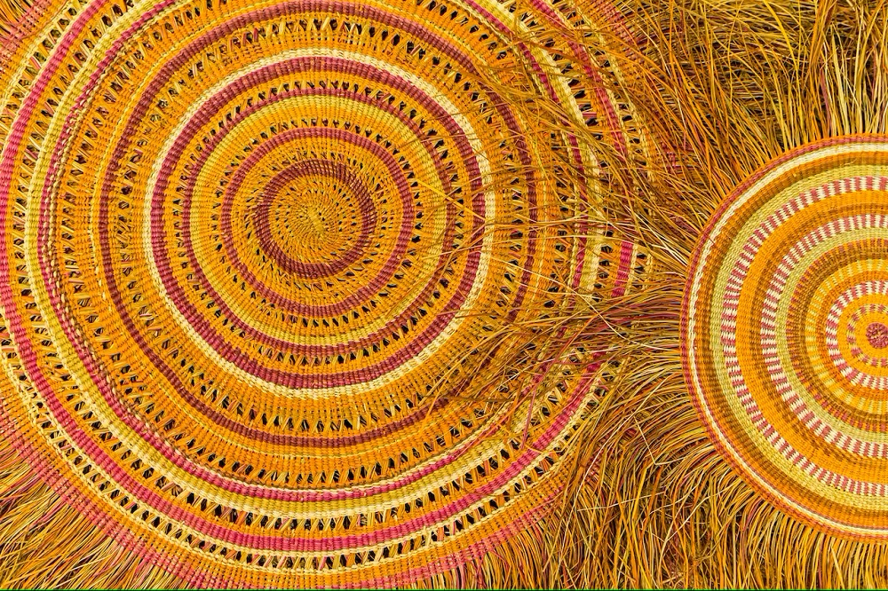

¿Qué es esto?
Un territorio en construcción
Este espacio no es una serie de entrada de blogs. Tampoco es un archivo. O una colección de publicaciones.
Es un territorio. Una forma de pensar el conocimiento, la memoria, los significados, los sonidos y los silencios.
Trabajo con bibliotecas, archivos, metadatos, flautas, ruinas, instrumentos que cantan, tecnologías que organizan, y con todo lo que queda afuera, en ese espacio difuso que algunos llaman los márgenes y que yo llamo mi casa.
Aquí hay escritos, experimentos, ideas, exploraciones, gestos, pocas soluciones y muchas dudas. Porque nada está cerrado. Todo está por trazar. Y, para alguien como yo, esa es una excelente noticia.
Me llamo Edgardo Civallero. Bienvenidxs a mi sitio web.
[Una parte clave de mi trabajo actual, centrado en la investigación, clasificación y documentación de instrumentos musicales como portadores de memoria y dispositivos epistémicos, está reunida en Instrumentarium, un sitio creado y dirigido por mí, Edgardo Civallero. Allí exploro los instrumentos como documentos vivos, experimento con nuevas taxonomías, y propongo formas alternativas de escuchar y narrar el mundo.]
Leer mi perfil completo...
Blogs
Crónicas de un biblio-naturalista | La entrada más reciente
Construyendo el archivo vivo
| Saberes y memorias silenciadas en los trópicos (08) | Publicado el 10 de julio de 2025 |
El archivo confundió el silencio con la ausencia, y lo llamó "prueba". Pero la memoria nunca se fue. Se movió, cantó, cocinó y se adaptó... viva, encarnada, y nunca archivada.
Continuar leyendo...
Todas las entradas del blog
Blog Bitácora de un bibliotecario | La entrada más reciente
Cuando una herramienta es un documento
| La taxonomía de la ausencia (07) | Publicado el 24 de junio de 2025 |
No todo saber puede escribirse. Algunos deben tejerse, tallarse, repararse. Este texto se pregunta qué pierden las bibliotecas al ignorar las herramientas como formas epistemológicas, y propone una práctica de la memoria que lea con las manos tanto como con los ojos.
Continuar leyendo...
Todas las entradas del blog
Notas críticas | La entrada más reciente
Estanterías sagradas
| Lidiando con el literocentrismo (02 de 10) | Publicado el 27 de juniu de 2025 |
Cuando el libro se vuelve sagrado, el estante se convierte en altar, y todo otro saber debe arrodillarse para ser admitido. En la reverencia silenciosa de las bibliotecas, lo que no está escrito rara vez encuentra lugar.
Continuar leyendo...
Todas las entradas del blog
Temas clave
Epistemologías insurgentes y decolonialismo
Saberes desplazados, negados, ilegibles. Producidos y recordados a la fuerza. Pensados desde el Sur, desde el margen y desde el grito no documentado. Lo que no cabe en el archivo. Memoria sin pedir permiso.
→ Ver másSemántica crítica y compostaje de archivos y bibliotecas
Compostar bibliotecas y archivos "muertos" para que de ellos brote algo distinto: transformar estructuras rígidas en sistemas vivos y dinámicos, capaces de nutrir nuevas formas de conocimiento. Tecnologías del conocimiento al servicio de otras lógicas, basadas en la conectividad, la descentralización y el respeto por la diversidad epistemológica. Conexiones inesperadas, tejidos insospechados. Modelar el mundo sin replicar su violencia, construyendo arquitecturas de datos que reconocen poder, contexto y resistencia.
→ Ver másTejido de memorias y significados para producir nuevos saberes
Tejer con recuerdos, residuos y gestos. Unir fragmentos para construir algo más grande. Hacer objetos, publicaciones y herramientas con memoria adentro. No se trata de representar: se trata de encarnar. Cada forma es también una forma de saber.
→ Ver másMárgenes, justicia epistémica, y documentos "otros"
Conocimientos y memorias “otros”. Los documentos que no se nombran. Oralidad, grafiti, cestería, cerámica, textiles, peinados, territorio: archivos sin papel. La igualdad de los sistemas de conocimiento. Ecologías del saber, redes epistémicas no hegemónicas. Trabajar en los márgenes es producir centro.
→ Ver másSonidos y silencios
Instrumentos musicales como archivos. Territorios sonoros como bibliotecas. Cantos, ruidos, ecos, vibraciones: formas de registrar lo indecible. Y los silencios que gritan. Escuchar es también una forma de archivar.
→ Ver más